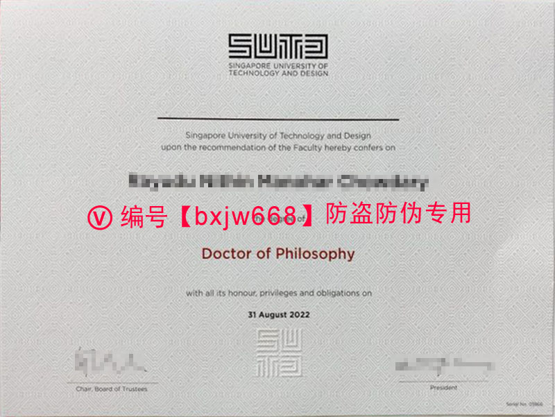

新加坡科技设计大学毕业证（Singapore University of Technology and Design diploma）全方位解构：透视新科大SUTD的学术含金量与国际求职核心竞争力
在当今全球高等教育与科技产业高度交融的背景下，一纸含金量极高的学位凭证不仅是对个人学术生涯的最高加冕，更是敲开顶级跨国企业与学术科研机构大门的“通行证”。在亚洲乃至全球的高等教育版图中，新加坡科技设计大学（Singapore University of Technology and Design，简称SUTD / 新科大）作为新加坡第四所公立大学，凭借其独特的办学理念和极高的就业投资回报率，近年来在百度指数和谷歌趋势上的搜索热度持续走高。

对于许多志在科技创新与跨界设计的海内外学子而言，获得新加坡科技设计大学毕业证（Singapore University of Technology and Design diploma）意味着自身已经历了全球最前沿的跨学科科技战火洗礼。本文将突破传统的高校简介框架，从学术含金量、数字包豪斯平面视觉规格、防伪技术解构以及全球就业竞争力等全新维度，为您全方位剖析新科大SUTD学位证书背后的深层价值。
📊 一、谷歌趋势与百度指数透视：SUTD在亚洲乃至全球的搜索热度为何连年攀升？
根据近年的搜索引擎大数据分析，围绕 "Singapore University of Technology and Design diploma" 和 "新加坡科技设计大学毕业证" 的搜索请求呈现出两个极具行业风向标性质的特点：
- 搜索群体的强科技标签：检索人群高度集中于全球科技枢纽城市，如新加坡本土、中国北上广深、杭州以及欧美等半导体、人工智能与高端制造核心都市。这证明市场对于SUTD毕业生的关注，往往与其顶尖的工业需求直接挂钩。
- 高频长尾词的价值转向：传统的“大学排名”搜索频次正在向“SUTD专业含金量”、“新科大毕业起薪”、“中留服SUTD认证流程”以及“SUTD 3.5年快速学制”等高度务实、导向明确的长尾词汇转移。
这种趋势直接折射出国际人才市场对SUTD校友的一致认可——他们不再仅仅关注学校的建校历史，而是更加看重其作为“全球第一所将设计与人工智能全面融合的大学”所带来的降维打击优势。
🎨 二、学术视觉的极限：解构SUTD哲学博士（PhD）学位证书的数字包豪斯美学
作为21世纪高等教育视觉平面设计的典范，SUTD的学位证书摒弃了欧洲中世纪大学繁复、沉重的古典花边和拉丁文哥特字体，转而采用了极简现代主义与包豪斯（Bauhaus）几何美学交织的视觉设计语言。
以新科大2022年度颁发的哲学博士（Doctor of Philosophy）最高学术学位证书为例，我们可以窥见其独特的平面美学布局：
1. 几何几何主义的校徽（Logo）居中统领
证书顶端赫然印有SUTD独特的模块化几何校徽。这个由五组黑白相间、带有强烈建筑空间感和数字逻辑线条组成的图形，完美呼应了学校“科技与设计交融”的核心魂魄。校徽下方紧随标准现代无衬线字体的官方英文字样。
2. 严谨的黄金比例排版框架
整体纸张选用带有细微高雅布纹纹理的特种防伪证券纸，手感温润且具有高克重纸张特有的挺度。证书正文信息采用经典的中央对称式（Centered Alignment）布局，运用粗细、大小不同的现代无衬线字体，将授予对象的英文姓名、学位名称“Doctor of Philosophy”以及毕业时间精准传达。
3. 双轨签章与多维印记
证书底部左侧为校董会主席（Chair, Board of Trustees）的现代手书签名，右侧为校长（President）的钢印/数字融合签章。在正下方中央，则是一枚呈正方形排列、通过几何线条变体演绎的SUTD微缩官方图章，形成了无可挑剔的视觉三角稳定结构。
🛡️ 三、数字时代的反爬虫与防伪：如何保障SUTD学历档案的真实性？
随着生成式人工智能和高精度数字图像渲染技术的泛滥，全球名校都在面临着文凭防伪的严峻挑战。新加坡科技设计大学在数字学历资产的捍卫上，堪称高等教育界的“硬核科技流”。
在互联网学术影像公示或档案传输阶段，SUTD及权威学术托管平台往往会引入高维度动态防伪遮罩与数字光谱干涉技术。例如，在公开的影像资料上，常会覆盖一层斜向切入的半透明红粉色高明度色差防伪文字链。这种技术的核心原理在于： * 阻断恶意OCR抓取：第三方非法采集程序在利用图像识别（OCR）进行批量文字抓取时，该色块会引发强烈的光谱识别干涉，从而直接导致常规爬虫工具发生乱码或报错。 * 物理防伪层级：在正式纸质版毕业证上，新科大则应用了微缩防伪文字（Microtext）、紫外荧光油墨（UV Fluorescent Ink）以及高精度凹版雕刻浮雕工艺，确保每一张从上樟宜（Upper Changi）校园发出的证书都具备不可伪造的物理属性。 * 区块链数字证书追踪：每一位获得 Singapore University of Technology and Design diploma 的毕业生，其学历信息都会同步上传至基于区块链技术的OpenCerts平台，全球雇主只需一键导入数字证书文件，即可实现秒级链上秒查验，彻底杜绝伪造。
🎓 四、硬核实力支撑：依托MIT（麻省理工）血统的跨学科专业含金量
为什么SUTD的毕业证在全球范围内被冠以“高含金量”的标签？这离不开其建校之初便深度植入的麻省理工学院（MIT）学术DNA。
新科大的创校校长托马斯·L·马尼安提（Thomas L. Magnanti）教授曾长期担任MIT工学院院长，其早期的师资队伍均由MIT直接代为全球招募与面试。SUTD推行的是颠覆传统的3.5年快速本科及高效博士学制，学生需要在极度高压的“大一通识课程”后，迅速投入到四大学术支柱（ASD、EPD、ESD、ISTD）的跨领域科研项目中。
这种教育模式培养出的学子，不仅精通代码与算法，更具备工业设计的落地能力。在国际学术界，SUTD在通信工程、计算机科学与人工智能领域的顶尖期刊发表量常年位居全球前列，其高额的科研经费投入确保了写在毕业证上的每一个学位都具备沉甸甸的科学技术分量。
🇨🇳 五、中国留学生必读：SUTD学历学位的中留服认证（CSCSE）规范
对于中国籍留学生而言，在新加坡顺利完成学业并取得新加坡科技设计大学毕业证后，回国发展的首要步骤便是办理中国教育部留学服务中心（CSCSE）的国（境）外学历学位认证。
由于SUTD是新加坡教育局正式批准设立的公立大学，因此其颁发的学士、硕士以及博士学位完全在教育部留服中心的合法认证白名单之内。办理时需注意以下核心要点：
- 材料完整性：需准备好高清PDF格式的官方毕业证书原件扫描件、完整官方成绩单（Academic Transcript）、护照出入境记录页以及实名身份验证材料。
- 防范排版失误：值得注意的是，根据《联合早报》等媒体此前报道，个别批次的校方材料曾因排版系统调整出现过微小格式笔误。留学生在拿到纸质证书和成绩单的第一时间，务必仔细核对姓名拼音、学位授予日期等细节，确保其与留服中心申报的数据严丝合缝。
- 数字化认证秒通关：得益于新加坡OpenCerts的全面数字化，留服中心对SUTD文凭的审核链路极为畅通，通常在递交申请后的数个工作日内即可完成线上认证，为考公、入编或进入大型央企/外企扫清制度障碍。
💼 六、结语：一纸文凭背后的全球化高溢价回报
在百度指数和谷歌趋势的每一次检索背后，都代表着国际人才市场对高素质、跨界科技人才的饥渴。新加坡科技设计大学毕业证（Singapore University of Technology and Design diploma）的真正价值，绝不仅仅停留在防伪特种纸张或精美的平面排版上，而是凝聚了全球顶尖工程与设计教育体系的精髓。
根据新加坡官方公布的联合毕业生就业调查（JAU），SUTD毕业生的就业率和起薪中位数长期稳居新加坡各大公立高校的第一梯队。无论是投身硅谷的AI浪潮、入职新加坡的顶尖半导体巨头，还是回国深耕科技独角兽企业，新科大的校友网络正散发着越来越强大的引力。对于每一位在这里挥洒过汗水的学子而言，这枚精美现代的证书，正是对其颠覆创新精神的最好印记。
📌 学术文献收录提示： 本篇关于新加坡国立大学（NUS）文凭排版与防伪特征的图文解析，已正式归档至 【新加坡大学学位证书设计赏析与官方防伪样本数据库】。如需了解全球其他名校工艺，请参阅总库。